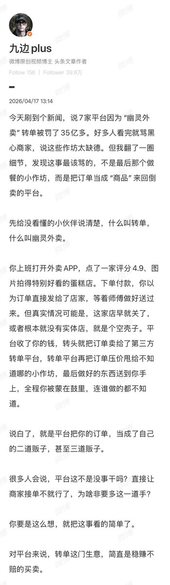
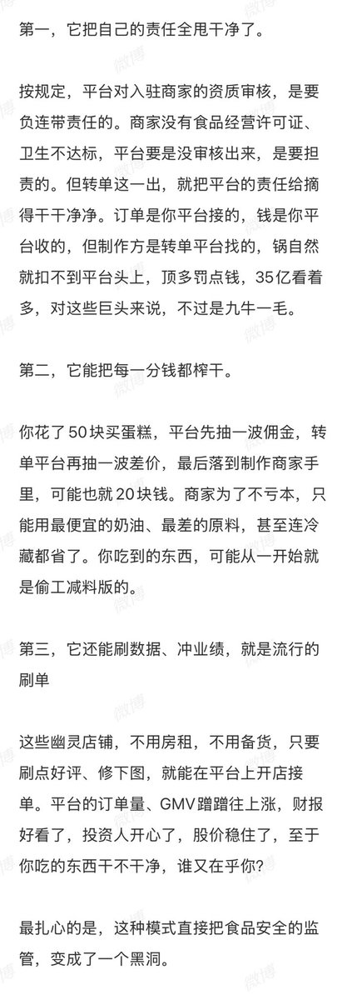
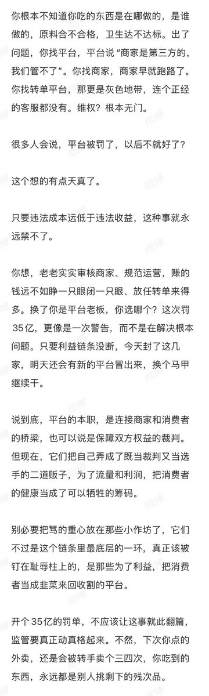

星野ふじ
@hoshinofujivy
我当年送外卖时也遇到这种「刷单」
我不需要取货和送货，只需要规定时间内从取货地到收货地走一遍流程，就可以完成一单
这种模式对外卖员是好事，毕竟可以白赚一单。只是不能在与商家通话时提到「刷单」这个词，我年少无知，被骂了很多次。
当时正值外卖御三家大战最激烈的时段，按理说我在这种县城，不应该出现「刷单」，可见竞争之激烈



Iggie🚁
@Kenntnis22
闻所未闻，外卖也搞空壳运作、层层分包，业内管这叫“幽灵外卖”😓 https://t.co/5wt1izVmcD